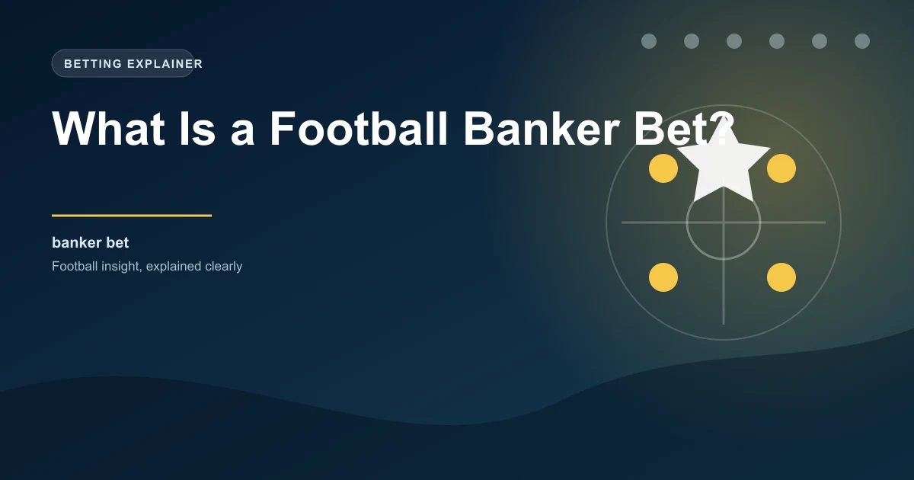

Every accumulator bettor has been there. You have picked six or seven legs, you are confident about most of them, but there is one selection you feel especially strong about. That one pick is your banker. It is the selection you would stake the most on if you were betting each leg individually. In football betting, a banker bet is exactly that: the selection you consider the most reliable part of your wager.
But the concept goes deeper than just picking a strong favourite. Banker bets play a specific role in how experienced bettors structure their accumulators, manage risk, and find value in markets that casual punters often overlook.
A banker bet is a selection that you believe has a significantly higher probability of winning than the odds suggest. It is the cornerstone of your accumulator, the leg you least expect to let you down. In practical terms, it is usually a short-priced favourite in a match where the quality gap is large and the stronger team has clear advantages.
Banker bets are not limited to the 1X2 market. You can have a banker in the over/under goals market, both teams to score, or even a handicap market. The defining feature is not the market type but your confidence level in that specific outcome.
The most common use of banker bets is within accumulators. When you build a multiple bet, you typically include a mix of risk levels. Some legs are speculative, offering higher odds but lower probability. Others are more conservative. The banker is the conservative anchor.
Combined odds: 1.25 × 1.80 × 1.75 × 1.85 = 7.28
Without the banker, the remaining three legs would combine at 5.82. The banker adds modestly to the total odds but significantly increases the probability of the entire accumulator winning.
The logic is straightforward. By including a selection with a high implied probability, you reduce the overall risk of the accumulator. The trade-off is that the banker adds relatively little to the combined odds because it is priced so short. However, the reduction in risk often outweighs the modest odds boost.
Not every short-priced favourite makes a good banker. The best banker bets share several characteristics that separate them from the rest of the market.
People often use "banker" and "safe" interchangeably, but there is a subtle difference. A safe bet implies certainty. A banker bet implies high confidence relative to the odds, but with an acknowledgment that nothing in football is guaranteed.
The distinction matters because it affects how you size your stake. If you treat a banker as a guaranteed outcome, you might over-stake and expose yourself to devastating losses when the unexpected happens. If you treat it as a high-probability selection, you will stake proportionally and maintain discipline even when the banker loses.
Even the strongest banker can lose. Manchester City have lost to teams at the bottom of the table. Real Madrid have been knocked out by underdogs in the Copa del Rey. The nature of football means that any single match can produce an unexpected result. Always stake within your bankroll limits, regardless of how confident you feel.
Finding a strong banker requires looking beyond the odds board. Here is a practical framework.
While the 1X2 market is the most common place to find bankers, sharp bettors use banker selections across multiple markets.
The temptation with banker bets is to stake disproportionately because the odds are short and the confidence is high. This is a dangerous trap. Even though bankers win more often than other selections, they still lose. And when they lose, they take down the entire accumulator.
A disciplined approach is to allocate a fixed percentage of your accumulator stake to the banker and the remaining percentage across your other selections. Never put more than 40% of your total accumulator stake on a single banker leg. If the banker is priced at 1.20 or shorter, the added value to your accumulator is minimal, so the extra risk is rarely justified.
Do not use the same team as your banker every week. Even the most dominant teams have off days. Rotate your banker selection based on the specific matchup, current form, and squad availability. A flexible approach to banker selection will serve you better long-term than loyalty to a single team.
Banker bets are a useful tool for bettors who understand their limitations. They can reduce accumulator risk and provide a structural framework for building multiples. However, they are not a shortcut to profit. The short odds on bankers mean they need to win very consistently to justify their place in your accumulators.
The most effective approach is to use banker bets selectively, only when your analysis genuinely supports high confidence, and always within a disciplined staking plan. When used well, they are a valuable part of a broader betting strategy. When used carelessly, they can create a false sense of security that costs you money.
Use our Ticket Builder to combine your banker picks with AI-powered predictions for optimised accumulator tickets.
 Win
Win